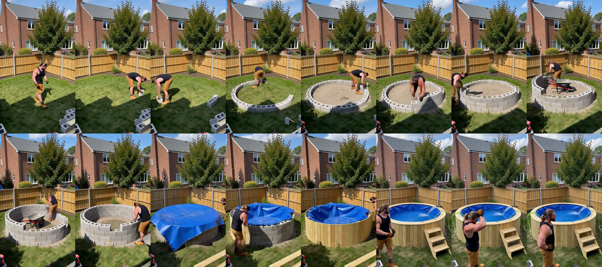
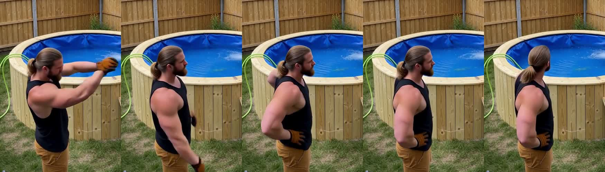

15.1 s, 1080×1920, our Follow button on the last 3 s. Text-only prompt (T2VA). Caption: Built a Round Cinder Block Pool with Cedar Cladding from Scratch! 😱🏊♂️ #diypool #backyardpool #cinderblock #yardtransformation #diyprojects

